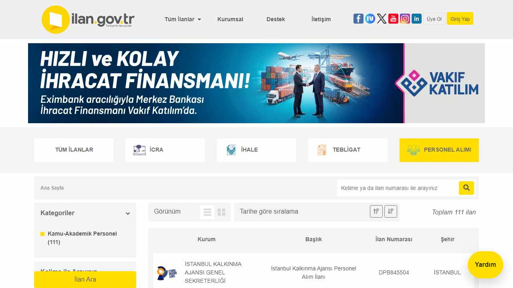
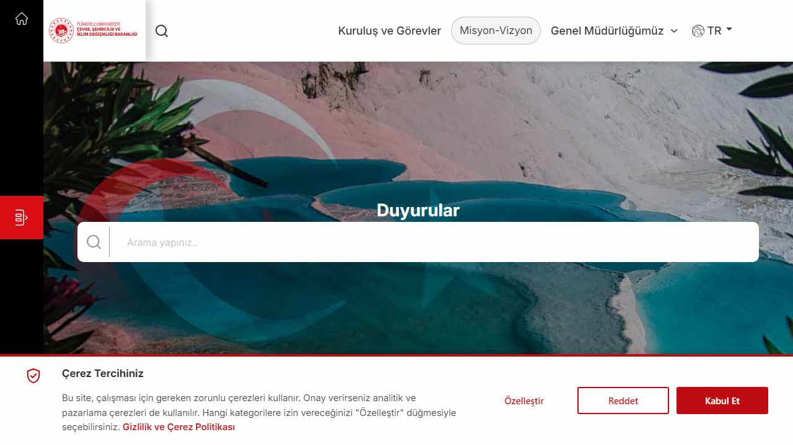
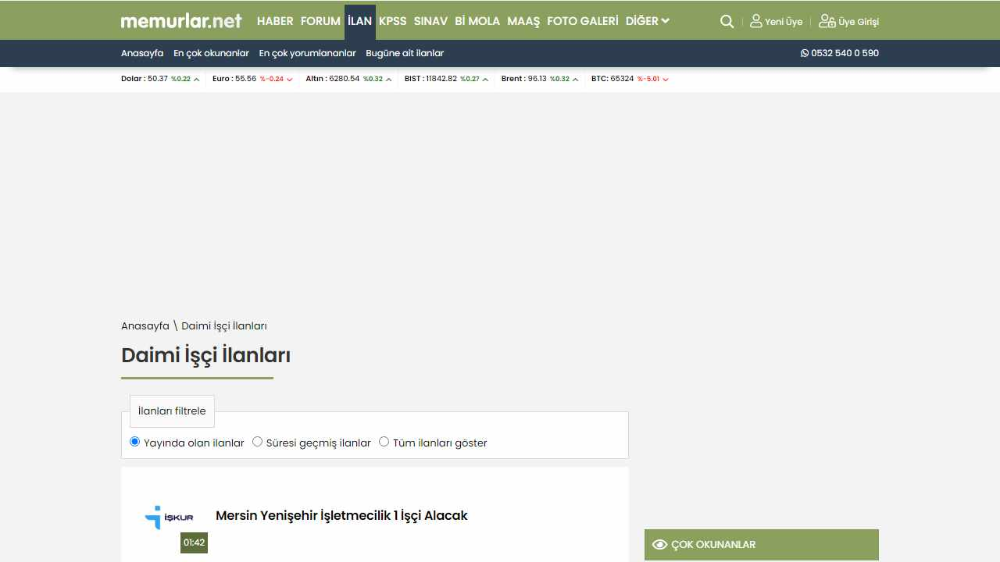

Not: sitede toplam: 124, okunan: 124, sayfalama: currentPage
Son URL: https://www.ilan.gov.tr/ilan/tum-ilanlar/personel-alimi?ats=5¤tPage=11
Başlık: ilan.gov.tr - Türkiye'nin İlan Portalı

Tüm İlanlar Kurumsal Destek İletişim Üye OlGiriş Yap Yardım TÜM İLANLAR İCRA İHALE TEBLİGAT PERSONEL ALIMI Ana Sayfa Kategoriler Kamu-Akademik Personel (124) Kelime ile Arayınız İlan Yeri Lütfen İl Seçiniz Yayın Tarihi Yayına Göre Arama Lütfen Yayın Seçiniz Kuruma Göre Arama Lütfen Kurum Seçiniz Fiyat İlan Türü Seçiniz İCRA İHALE TEBLİGAT PERSONEL ALIMI Eleman Sayısı Aranılan Nitelik ve Unvan Başvuru Süresi İlan Ara Görünüm Tarihe göre sıralama Toplam 124 ilan Kurum Başlık İlan Numarası Şehir SARIİDRİS BELEDİYE BAŞKANLIĞI Sarıidris Belediye Başkanlığı Zabıta Memuru Alım İlanı DPB845509 ISPARTA İSTANBUL KALKINMA AJANSI GENEL SEKRETERLİĞİ İstanbul Kalkınma Ajansı Personel Alım İlanı DPB845504 İSTANBUL TÜRMOB TÜRKİYE SERBEST MUHASEBECİ MALİ MÜŞAVİRLER VE YEMİNLİ MALİ MÜŞAVİRLER ODALARI BİRLİĞİ TÜRMOB'dan Yeminli Mali Müşavirlik Sınav Duyurusu DPB845226 ANKARA SEGEM SİGORTACILIK EĞİTİM MERKEZİ 2026 Yılı Aktüerlik Sınavları İlanı ILN02369824 İSTANBUL Önceki sayfa sayfa 1 sayfa ... sayfa 7 sayfa 8 sayfa 9 sayfa 10 Şu sayfadasınız 11 Sonraki sayfa
'' -> / 'Tüm İlanlar' -> /ilan/tum-ilanlar 'İCRA' -> /ilan/tum-ilanlar/icra?ats=2 'İHALE' -> /ilan/tum-ilanlar/ihale?ats=3 'TEBLİGAT' -> /ilan/tum-ilanlar/tebligat?ats=4 'PERSONEL ALIMI' -> /ilan/tum-ilanlar/personel-alimi?ats=5 '' -> /ilan/tum-ilanlar/icra?ats=2 '' -> /ilan/kategori/1/emlak?ats=2 '' -> /ilan/kategori/2/vasita?ats=2 '' -> /ilan/kategori/4/endustriyel-urunler?ats=2 '' -> /ilan/kategori/5/hayvan-ve-hayvancilik?ats=2 '' -> /ilan/kategori/3/muhtelif?ats=2 '' -> /ilan/tum-ilanlar/ihale?ats=3 '' -> /ilan/kategori/9/ihale-duyurulari?ats=3 '' -> /ilan/kategori/1/emlak?ats=3 '' -> /ilan/kategori/2/vasita?ats=3 '' -> /ilan/kategori/4/endustriyel-urunler?ats=3 '' -> /ilan/kategori/5/hayvan-ve-hayvancilik?ats=3 '' -> /ilan/tum-ilanlar/tebligat?ats=4 '' -> /ilan/kategori/7/tebligat-ve-duyurular?ats=4 '' -> /ilan/kategori/12/iflas-hukuku-davalari?ats=4 '' -> /ilan/tum-ilanlar/personel-alimi?ats=5 '' -> /ilan/kategori/8/kamu-akademik-personel?ats=5 '' -> /ilan/tum-ilanlar 'Kurumsal' -> /kurumsal-basin-ilan-kurumu 'Destek' -> /yardim-nasil-uye-olurum 'İletişim' -> /iletisim-genel-mudurluk '' -> https://www.facebook.com/resmiilan/ '' -> https://sosyal.teknofest.app/@ilangovtr '' -> https://twitter.com/ilangovtr '' -> https://www.youtube.com/channel/UCoLna6joUEuJ4eO7bjCP_Bw '' -> https://www.instagram.com/resmiilan/ '' -> https://www.linkedin.com/company/ilan-gov-tr/ 'Üye Ol' -> /uyelik/uye-ol 'Giriş Yap' -> /uyelik/giris 'TÜM İLANLAR' -> /ilan/tum-ilanlar 'İCRA' -> /ilan/tum-ilanlar/icra?ats=2 'İHALE' -> /ilan/tum-ilanlar/ihale?ats=3 'TEBLİGAT' -> /ilan/tum-ilanlar/tebligat?ats=4 'PERSONEL ALIMI' -> /ilan/tum-ilanlar/personel-alimi?ats=5
GET 200 https://www.ilan.gov.tr//assets/appconfig.production.json
yanıt: {
"remoteServiceBaseUrl": "https://www.ilan.gov.tr/api",
"appBaseUrl": "https://www.ilan.gov.tr",
"cdnBaseUrl": "https://medya.ilan.gov.tr/"
}
GET 200 https://www.ilan.gov.tr/api/AbpUserConfiguration/GetAll
yanıt: {"result":{"multiTenancy":{"isEnabled":false,"ignoreFeatureCheckForHostUsers":false,"sides":{"host":"Host","tenant":"Tenant"}},"session":{"userId":null,"tenantId":1,"impersonatorUserId":null,"impersonatorTenantId":1,"multiTenancySide":"Tenant"},"localization":{"currentCulture":{"name":"tr","displayN
GET 200 https://www.ilan.gov.tr/api/api/services/app/Session/GetCurrentLoginInformations
yanıt: {"result":{"application":{"version":"5.0.0.0","releaseDate":"2026-09-24T04:22:04Z","features":{}},"user":null,"tenant":{"tenancyName":"Default","name":"Default","id":1}},"targetUrl":null,"success":true,"error":null,"unAuthorizedRequest":false,"__abp":true}
POST 200 https://www.google-analytics.com/j/collect?v=1&_v=j102&a=1622902157&t=pageview&_s=1&dl=https%3A%2F%2Fwww.ilan.gov.tr%2Filan%2Ftum-ilanlar%2Fpersonel-alimi%3Fats%3D5&ul=tr-tr&dt=ilan.gov.tr%20-%20T%C3%
GET 200 https://www.ilan.gov.tr/api/api/services/app/AdHomePage/GetRichMenuStats
yanıt: {"result":[{"id":2,"key":"İCRA","displayName":null,"slug":"İCRA","plateNumber":null,"count":0,"stats":[{"id":1,"key":"Emlak","displayName":null,"slug":"Emlak","plateNumber":null,"count":8857,"stats":null,"orderNo":25,"statType":"Category","logoPath":null,"iconFullPath":null},{"id":2,"key":"Vasıta","
GET 200 https://www.ilan.gov.tr/api/api/services/app/Banner/GetDetailUniversal?bannerPositionEnum=Genel_Sol
yanıt: {"result":null,"targetUrl":null,"success":true,"error":null,"unAuthorizedRequest":false,"__abp":true}
GET 200 https://www.ilan.gov.tr/api/api/services/app/Banner/GetDetailUniversal?bannerPositionEnum=Genel_Ust
yanıt: {"result":null,"targetUrl":null,"success":true,"error":null,"unAuthorizedRequest":false,"__abp":true}
GET 200 https://www.ilan.gov.tr/api/api/services/app/Banner/GetDetailUniversal?bannerPositionEnum=Popup_Genel
yanıt: {"result":null,"targetUrl":null,"success":true,"error":null,"unAuthorizedRequest":false,"__abp":true}
GET 200 https://www.ilan.gov.tr/api/api/services/app/Banner/GetDetailUniversal?bannerPositionEnum=Mobil_Genel_Sol
yanıt: {"result":null,"targetUrl":null,"success":true,"error":null,"unAuthorizedRequest":false,"__abp":true}
GET 200 https://www.ilan.gov.tr/api/api/services/app/Banner/GetDetailUniversal?bannerPositionEnum=Mobil_Genel_Ust
yanıt: {"result":null,"targetUrl":null,"success":true,"error":null,"unAuthorizedRequest":false,"__abp":true}
GET 200 https://www.ilan.gov.tr/api/api/services/app/Menu/GetBottomMenu
yanıt: {"result":[{"id":81,"parentId":null,"url":null,"title":"KURUMSAL","children":[{"id":86,"parentId":81,"url":"/kurumsal-basin-ilan-kurumu","title":"Basın İlan Kurumu","children":null,"isSelected":false,"contentTitle":"-","contentSlug":"-","contentDetail":"-"},{"id":170,"parentId":81,"url":"/kurumsal-t
GET 200 https://www.ilan.gov.tr/api/api/services/app/Banner/GetDetailUniversal?bannerPositionEnum=Genel_Sag
yanıt: {"result":null,"targetUrl":null,"success":true,"error":null,"unAuthorizedRequest":false,"__abp":true}
GET 200 https://www.ilan.gov.tr/api/api/services/app/Banner/GetDetailUniversal?bannerPositionEnum=Mobil_Genel_Sag
yanıt: {"result":null,"targetUrl":null,"success":true,"error":null,"unAuthorizedRequest":false,"__abp":true}
POST 204 https://www.google-analytics.com/g/collect?v=2&tid=G-E5HGE1NKEK>m=45je6bh0v9116736288za20ozb9119647798zd9119647798xf1&_p=1795027637174&gcd=13l3l3l3l1l1&npa=0&dma=0&are=1&cid=1774079015.1795027638&fr
POST 204 https://www.google-analytics.com/g/collect?v=2&tid=G-E5HGE1NKEK>m=45je6bh0v9116736288za20gzb9119647798zd9119647798xf1&_p=1795027637174&gcd=13l3l3l3l1l1&npa=0&dma=0&_eu=AEAAAAQ&ae=a&are=1&cid=1774079
GET 200 https://www.ilan.gov.tr/api/api/services/app/Banner/GetDetailUniversal?bannerPositionEnum=Mobil_Icsayfa_Sol
GET 200 https://www.ilan.gov.tr/api/api/services/app/Banner/GetDetailUniversal?bannerPositionEnum=Icsayfa_Ust
GET 200 https://www.ilan.gov.tr/api/api/services/app/Banner/GetDetailUniversal?bannerPositionEnum=Mobil_Icsayfa_Sag
GET 200 https://www.ilan.gov.tr/api/api/services/app/Banner/GetDetailUniversal?bannerPositionEnum=Icsayfa_Sol
GET 200 https://www.ilan.gov.tr/api/api/services/app/Banner/GetDetailUniversal?bannerPositionEnum=Icsayfa_Sag
GET 200 https://www.ilan.gov.tr/api/api/services/app/Banner/GetDetailUniversal?bannerPositionEnum=Mobil_Icsayfa_Ust
GET 200 https://www.ilan.gov.tr/api/api/services/app/Filter/GetAllFiltersOfSet?setIdAdType=5
GET 200 https://www.ilan.gov.tr/api/api/services/app/AdHomePage/GetAdStatsByExternalInstitutions
POST 200 https://www.ilan.gov.tr/api/api/services/app/Ad/AdsByFilter
gövde: {"keys":{"ats":[5]},"skipCount":0,"maxResultCount":12}
GET 200 https://www.ilan.gov.tr/api/api/services/app/Banner/GetDetailUniversal?bannerPositionEnum=Icsayfa_OrtaNot: sitede toplam: 12, okunan: 11, personel ilanı: 4, PDF bulma: dizin linkleri — okunamayan PDF: 1 (taranmış görüntü olabilir; elle kontrol listesinde) — veritabanından tekrar kullanılan: 4
Son URL: https://www.resmigazete.gov.tr/ilanlar/eskiilanlar/2026/11/20261118-4.htm
Başlık: ÇEŞİTLİ İLANLAR

18 Kasım 2026 ÇARŞAMBA Resmî Gazete Sayı : 33434 ÇEŞİTLİ İLÂNLAR Atatürk Üniversitesi Rektörlüğünden: Çevre, Şehircilik ve İklim Değişikliği Bakanlığı Milli Emlak Genel Müdürlüğünden: Çevre, Şehircilik ve İklim Değişikliği Bakanlığı Yerel Yönetimler Genel Müdürlüğünden: Hacettepe Üniversitesi Rektörlüğünden: İstanbul Teknik Üniversitesi Rektörlüğünden: Milli Savunma Bakanlığı Askeri Fabrikalar Genel Müdürlüğünden: Karamanoğlu Mehmetbey Üniversitesi Rektörlüğünden: Milli Eğitim Bakanlığı Destek Hizmetleri Genel Müdürlüğünden: Milli Eğitim Bakanlığı Temel Eğitim Genel Müdürlüğünden: Bayburt Üniversitesi Rektörlüğünden: Bilecik Şeyh Edebali Üniversitesi Rektörlüğünden: Burdur Mehmet Akif Ersoy Üniversitesi Rektörlüğünden:
'Atatürk Üniversitesi Rektörlüğünden:' -> 20261118-4-1.pdf 'Çevre, Şehircilik ve İklim Değişikliği Bakanlığı Milli Emlak Genel Müd' -> 20261118-4-2.pdf 'Çevre, Şehircilik ve İklim Değişikliği Bakanlığı Yerel Yönetimler Gene' -> 20261118-4-3.pdf 'Hacettepe Üniversitesi Rektörlüğünden:' -> 20261118-4-4.pdf 'İstanbul Teknik Üniversitesi Rektörlüğünden:' -> 20261118-4-5.pdf 'Milli Savunma Bakanlığı Askeri Fabrikalar Genel Müdürlüğünden:' -> 20261118-4-6.pdf 'Karamanoğlu Mehmetbey Üniversitesi Rektörlüğünden:' -> 20261118-4-7.pdf 'Milli Eğitim Bakanlığı Destek Hizmetleri Genel Müdürlüğünden:' -> 20261118-4-8.pdf 'Milli Eğitim Bakanlığı Temel Eğitim Genel Müdürlüğünden:' -> 20261118-4-9.pdf 'Bayburt Üniversitesi Rektörlüğünden:' -> 20261118-4-10.pdf 'Bilecik Şeyh Edebali Üniversitesi Rektörlüğünden:' -> 20261118-4-11.pdf 'Burdur Mehmet Akif Ersoy Üniversitesi Rektörlüğünden:' -> 20261118-4-12.pdf
POST 200 https://v2-ping-ns01-4878e6a4-2a79-41cc-93d6-0ffc5a9b6c2d.collector.p.analitik.bik.gov.tr/api/collect/check
gövde: {"website":"4878e6a4-2a79-41cc-93d6-0ffc5a9b6c2d","hostname":"www.ilan.gov.tr","eventId":"bfb787dc-c651-4670-ba27-dce1680d3f73","isBot":false,"td":0,"ts":1794474551000,"timestamp":1795027675677,"activNot: IlanDetay linkleri doğrudan bulundu; sitede toplam: 23, okunan: 23, harici siteye giden (İlana Git): 1
Son URL: https://kariyerkapisi.gov.tr/isealim
Başlık: Kariyer Kapısı - Anasayfa

e-Devlet ile Giriş Sıkça Sorulan Sorular Kurum Seçiniz AFET VE ACİL DURUM YÖNETİMİ BAŞKANLIĞI (AFAD)(2İLAN) ANADOLU ÜNİVERSİTESİ REKTÖRLÜĞÜ(1İLAN) BURSA TEKNİK ÜNİVERSİTESİ REKTÖRLÜĞÜ(1İLAN) DOĞU KARADENİZ KALKINMA AJANSI(1İLAN) DOKUZ EYLÜL ÜNİVERSİTESİ REKTÖRLÜĞÜ(1İLAN) HAZİNE VE MALİYE BAKANLIĞI(1İLAN) İSTANBUL KALKINMA AJANSI(1İLAN) İZMİR DEMOKRASİ ÜNİVERSİTESİ REKTÖRLÜĞÜ(1İLAN) KAMU DENETÇİLİĞİ KURUMU (OMBUDSMANLIK)(1İLAN) KAMU İHALE KURUMU(2İLAN) KARABAĞLAR BELEDİYE BAŞKANLIĞI(1İLAN) MARMARA ÜNİVERSİTESİ REKTÖRLÜĞÜ(1İLAN) NÜKLEER DÜZENLEME KURUMU BAŞKANLIĞI(1İLAN) ORTA ANADOLU KALKINMA AJANSI(1İLAN) ORTA KARADENİZ KALKINMA AJANSI (OKA)(1İLAN) SAHİL GÜVENLİK KOMUTANLIĞI(1İLAN) SAVUNMA SANAYİİ BAŞKANLIĞI(1İLAN) SAYIŞTAY BAŞKANLIĞI(1İLAN) SOSYAL GÜVENLİK KURUMU BAŞKANLIĞI(1İLAN) TÜRKİYE İSTATİSTİK KURUMU (TÜİK)(1İLAN) YILDIZ TEKNİK ÜNİVERSİTESİ REKTÖRLÜĞÜ(1İLAN) ZAFER KALKINMA AJANSI(1İLAN) Kurum Seçiniz İlan Türünü Seçiniz A Grubu Memur (Kariyer Meslek) B Grubu Memur Sözleşmeli Personel İlanları İşçi İlanları Hakim ve Savcı İlanları Görevde Yükselme ve Unvan Değişikliği İlanları Yurt Dışı Eğitim İlanları Belge Başvurusu İlanları Tercih İlanı Öğretim Üyesi Öğretim Görevlisi Araştırma Görevlisi Askeri Personel İlanları Merkezi Yerleştirme (ÖSYM) Sürekli İşçi Geçici İşci Engelli İşçi Eski Hükümlü İşçi Yeterlik Sınavı İlanları İlan Türünü Seçiniz İl Seçiniz BAKANLIK MERKEZ TEŞKİLATI TÜRKİYE GENELİ YURT DIŞI TEŞKİLATI ADANA ADIYAMAN AFYONKARAHİSAR AĞRI AKSARAY AMASYA ANKARA
'' -> # '' -> # 'e-Devlet ile Giriş' -> https://giris.turkiye.gov.tr/OAuth2AuthorizationServer/AuthorizationController?response_type=code&client_id=88 'Sıkça Sorulan Sorular' -> sss '' -> # 'Başvur' -> IlanDetay?i=51fd7921-cfbe-482f-8e2f-b8a569a605d0 'Başvur' -> IlanDetay?i=26f5b7a7-865c-483f-9045-2f77e5e7fb9d 'Başvur' -> IlanDetay?i=84e11358-b080-4b29-ae1e-3ab83bd8f689 'Başvur' -> IlanDetay?i=89781649-6080-4021-9739-f8ba3d875cd0 'Başvur' -> IlanDetay?i=f657a20b-5132-4e3a-8b1e-131e031f065b 'Başvur' -> IlanDetay?i=724294dd-2cf3-4df3-8cd5-615baea623be 'Başvur' -> IlanDetay?i=bf7a4a08-46c9-4643-a8c4-6ccf9c8c6d1b 'Başvur' -> IlanDetay?i=c1ab5cba-d22b-40ab-b89b-1d27431a422c 'Başvur' -> IlanDetay?i=db21f412-186a-4d5c-bc46-03dff9ea17fb 'Başvur' -> IlanDetay?i=4d1a4aba-67fa-449d-b19d-13b197a770f0 'Başvur' -> IlanDetay?i=98cd96c1-83b3-425a-869c-dae40ba7aee1 'Başvur' -> IlanDetay?i=ff6084a1-bbdd-45d7-b62e-a649a026a2b2 'Başvur' -> IlanDetay?i=dea72757-7130-466f-bcf2-8d316d02add1 'İlana Git' -> https://turkiye.gov.tr/sahil-guvenlik-komutanligi-is-basvurusu 'Başvur' -> IlanDetay?i=31b4b404-05cb-4298-9460-1ab3b13b33e8 'Başvur' -> IlanDetay?i=8892720e-d38e-46f8-994e-138c6d4b7d81 'Başvur' -> IlanDetay?i=f82ad1a8-39b9-4732-acb4-be6cbe8f772e 'Başvur' -> IlanDetay?i=a1ba338b-81ac-4dfb-9cc3-dc53c4c438cd 'Başvur' -> IlanDetay?i=4850e095-8b16-4aba-9956-555740a41146 'Başvur' -> IlanDetay?i=2b5ee2d8-3958-4fd1-a3cb-219bcb7b536d 'Başvur' -> IlanDetay?i=9ff8772a-9434-42fb-84ad-f8080f79640d 'Başvur' -> IlanDetay?i=35749108-46fb-4b62-bc89-3700f1525802 'Başvur' -> IlanDetay?i=6e7cd2e5-b3d8-4c95-916b-6e1ff234b0b0 'Başvur' -> IlanDetay?i=41353f9d-7dda-4b65-b2ba-de6bf8e72f54 '' -> https://twitter.com/kariyerkapisi '' -> https://www.linkedin.com/showcase/kariyerkapisi/ '' -> https://www.instagram.com/kariyerkapisi/?igshid=sj6wm9vis9se '' -> https://www.facebook.com/kariyerkapisi/ '' -> /isealim '' -> https://kariyerkapisi.gov.tr/RSS/RssLinkiAl '' -> https://www.linkedin.com/showcase/kariyerkapisi '' -> https://www.facebook.com/kariyerkapisi/ '' -> https://twitter.com/kariyerkapisi '' -> https://instagram.com/kariyerkapisi?igshid=sj6wm9vis9se
POST 200 https://api.kariyerkapisi.gov.tr/api/ilan/GetIseAlimPage
gövde: {"krM_ID":0,"searchText":"","il":"0","ilanTuru":"0"}
yanıt: {"ilanCountForKurum":[{"krM_ID":68,"adi":"AFET VE ACİL DURUM YÖNETİMİ BAŞKANLIĞI (AFAD)","ilanCount":2},{"krM_ID":97,"adi":"ANADOLU ÜNİVERSİTESİ REKTÖRLÜĞÜ","ilanCount":1},{"krM_ID":218,"adi":"BURSA TEKNİK ÜNİVERSİTESİ REKTÖRLÜĞÜ","ilanCount":1},{"krM_ID":120,"adi":"DOĞU KARADENİZ KALKINMA AJANSI","
POST 204 https://www.google-analytics.com/g/collect?v=2&tid=G-756JYX7QPN>m=45je6bh0v9228915839za208zd9228915839xf1&_p=1795027690907&gcd=13l3l3l3l1l1&npa=0&dma=0&are=1&cid=1429670803.1795027691&frm=0&ngs=1&ps
POST 204 https://www.google-analytics.com/g/collect?v=2&tid=G-756JYX7QPN>m=45je6bh0v9228915839za200zd9228915839xf1&_p=1795027690907&gcd=13l3l3l3l1l1&npa=0&dma=0&_eu=AEAAAAQ&ae=a&are=1&cid=1429670803.17950276Not: sitede toplam: 95, okunan: 122 (ham bağlantı: 122, tekrarlar elendi) — detay metni okunan: 0/107 — veritabanından tekrar kullanılan: 107 (+15 ilgisiz başlık atlandı)
Son URL: https://kamuilan.sbb.gov.tr/
Başlık: Kamu Personeli Alım İlanları

KAMU PERSONELİ ALIM İLANLARI MANŞET KATEGORİLER ARŞİV TÜM KAMU PERSONEL İLANLARI TEK ADRESTE. İSTANBUL KALKINMA AJANSI 5 UZMAN ALACAK 2 Kasım - 22 Kasım HAZİNE VE MALİYE BAKANLIĞI 10 STAJYER HAZİNE KONTROLÖRÜ ALACAK - DÜZELTME İLANI 23 Kasım - 4 Aralık AFET VE ACİL DURUM YÖNETİMİ BAŞKANLIĞI 7 AFET VE ACİL DURUM YÖNETİMİ DENETÇİ YARDIMCISI ALACAK 23 Kasım - 30 Kasım AFET VE ACİL DURUM YÖNETİMİ BAŞKANLIĞI 13 AFET VE ACİL DURUM YÖNETİMİ UZMAN YARDIMCISI ALACAK 23 Kasım - 30 Kasım ANADOLU ÜNİVERSİTESİ 1 SÖZLEŞMELİ PERSONEL ALACAK 16 Kasım - 30 Kasım AKDENİZ ÜNİVERSİTESİ 3 SÜREKLİ İŞÇİ ALACAK 16 Kasım - 20 Kasım DİCLE KALKINMA AJANSI 4 SÖZLEŞMELİ UZMAN PERSONEL ALACAK 4 Aralık - 18 Aralık HAZİNE VE MALİYE BAKANLIĞI 10 STAJYER HAZİNE KONTROLÖRÜ ALACAK 23 Kasım - 4 Aralık YÜKSEKÖĞRETİM KALİTE KURULU 5 UZMAN YARDIMCISI ALACAK 1 Aralık - 14 Aralık BURSA TEKNİK ÜNİVERSİTESİ 1 SÖZLEŞMELİ PSİKOLOG ALACAK 13 Kasım - 27 Kasım SAHİL GÜVENLİK KOMUTANLIĞI 10 MEMUR ALACAK 16 Kasım - 27 Kasım SAVUNMA SANAYİİ BAŞKANLIĞI 26 PROJE BAZLI SÖZLEŞMELİ PERSONEL ALACAK 20 Kasım - 21 Aralık SAYIŞTAY BAŞKANLIĞI 16 SÖZLEŞMELİ PERSONEL ALACAK 11 Kasım - 25 Kasım KAMU DENETÇİLİĞİ KURUMU 10 KAMU DENETÇİLİĞİ UZMAN YARDIMCISI ALACAK 9 Kasım - 22 Kasım İZMİR DEMOKRASİ ÜNİVERSİTESİ 2 SÖZLEŞMELİ PERSONEL ALACAK 7 Kasım - 20 Kasım SOSYAL GÜVENLİK KURUMU BAŞKANLIĞI 100 SOSYAL GÜVENLİK DENETMEN YARDIMCISI ALACAK 9 Kasım - 22 Kasım MARMARA ÜNİVERSİTESİ 10 SÖZLEŞMELİ PERSONEL ALACAK 6 Kasım - 20 Kasım ZAFER KALKINMA
'' -> http://www.sbb.gov.tr 'MANŞET' -> #top 'KATEGORİLER' -> # 'ARŞİV' -> # '' -> # 'İSTANBUL KALKINMA AJANSI\n5 UZMAN ALACAK\n2 Kasım - 22 Kasım' -> ilanDetay.aspx?kod=nzuoiVr4%2bap2C%2f5dvRVsURDl674Fq6qD4isMtgRDdNKIZahcM6PTq6rcztZ9x7pTz5lT8aJCG%2blUKI%2bzQm0 'HAZİNE VE MALİYE BAKANLIĞI\n10 STAJYER HAZİNE KONTROLÖRÜ ALACAK - DÜZEL' -> ilanDetay.aspx?kod=EBIs%2fUMBt1S2kkyW3A%2fNr6Fqo1JVcbNdmLuNigdiTHU31thBaeonjpSQ5kQsk2QTfsMPVx1rL1E%2bqJvUMTcqK 'AFET VE ACİL DURUM YÖNETİMİ BAŞKANLIĞI\n7 AFET VE ACİL DURUM YÖNETİMİ D' -> ilanDetay.aspx?kod=Bmmp9sk1P%2b5SmNMCvWTlkl9QMdnyjSJctUFNyGBRHubewakDuKyMSg9TwV34OI%2b2UANJ3OFNJMSvkMYzOvKBUOe 'AFET VE ACİL DURUM YÖNETİMİ BAŞKANLIĞI\n13 AFET VE ACİL DURUM YÖNETİMİ ' -> ilanDetay.aspx?kod=74thO6oB1ukMG4FUc%2fsASI5vLBvsKaMsOwiMGAy4E%2fp0p0O521xVc4aVt2XghopxbYNq1fctVV0jkrTseXwLdvi 'ANADOLU ÜNİVERSİTESİ\n1 SÖZLEŞMELİ PERSONEL ALACAK\n16 Kasım - 30 Kasım' -> ilanDetay.aspx?kod=rUdSlYw2z1ny44y2uA%2fTFMA6bfjk26tMhOKJ8%2fqOCR7nnxoURjETjNpJtKaCwrYHt7ItW3m7ptznr5QaFUyrtlN 'AKDENİZ ÜNİVERSİTESİ\n3 SÜREKLİ İŞÇİ ALACAK\n16 Kasım - 20 Kasım' -> ilanDetay.aspx?kod=chVkRYEWoHAJWgSdC%2f9YJAjM1Fv0K8DOTbHFQZj9PoyEOq7jhwHBpQ4eu3j%2bIATsgv%2f4sUVELLwyjrKUuWLyy 'DİCLE KALKINMA AJANSI\n4 SÖZLEŞMELİ UZMAN PERSONEL ALACAK\n4 Aralık - 18' -> ilanDetay.aspx?kod=I5MMNdyYkgYDOBQCJ6QoaAT8nWqxlmNNP41nTKFt0%2b%2fHeKpQJeZ04gHQoOiNwqNQQ%2bnXXs7RpquakUQFtz35n 'HAZİNE VE MALİYE BAKANLIĞI\n10 STAJYER HAZİNE KONTROLÖRÜ ALACAK\n23 Kası' -> ilanDetay.aspx?kod=sddPL2LH9YVXcait3kwxIH%2bFLEJ6PuJkawtKlDQt8Ykwi%2fxB%2fM662JbFbiExVAOukeGgWZeCyEN8pnbSomGZO 'YÜKSEKÖĞRETİM KALİTE KURULU\n5 UZMAN YARDIMCISI ALACAK\n1 Aralık - 14 Ar' -> ilanDetay.aspx?kod=SLOVSIj%2b%2fXHruAqckhijwtpk6Ol17MmaHYeVjHKyQxdaGoyorM7d7IBOJ9h09Ogjw8KJ4BrcXPA3Ixi1Dhv1gBf 'BURSA TEKNİK ÜNİVERSİTESİ\n1 SÖZLEŞMELİ PSİKOLOG ALACAK\n13 Kasım - 27 K' -> ilanDetay.aspx?kod=8%2bq%2fAOVOebZhPNfnBYFbN5NK2O8AnLqMH%2bk2hhrP3f6gKhuE0wnG2hUnXirjR7%2fHZmUXTb3tc4WVC3XLNOG 'SAHİL GÜVENLİK KOMUTANLIĞI\n10 MEMUR ALACAK\n16 Kasım - 27 Kasım' -> ilanDetay.aspx?kod=C5GDU4BmT3lpaVIzZLWAYC2gSV4Cd6VSacldjWQZOn3uzAC8yLtqgcKDqtFFzM%2bIGoaOFHOsLRm6I09BaqJ4Svr5d 'SAVUNMA SANAYİİ BAŞKANLIĞI\n26 PROJE BAZLI SÖZLEŞMELİ PERSONEL ALACAK\n2' -> ilanDetay.aspx?kod=DHrKdziSbeiGTEjwYJR4XTZUY6MUJm80xib4CbEDPH7DnA6w3QItyNST5HRjvt%2f4%2fLKoUa639yYMj5POmFGy93C 'SAYIŞTAY BAŞKANLIĞI\n16 SÖZLEŞMELİ PERSONEL ALACAK\n11 Kasım - 25 Kasım' -> ilanDetay.aspx?kod=NyENPoHX1ams2aymZPkRivH7NWQMiutILpy8oAELkWITxHmGjSMLE6oYpf1hTHax0dE0RMOwn4FIjKBA%2bpECAEvx3 'KAMU DENETÇİLİĞİ KURUMU\n10 KAMU DENETÇİLİĞİ UZMAN YARDIMCISI ALACAK\n9 ' -> ilanDetay.aspx?kod=CDb8XMVwsLQBiXhCkW3PL33QPcawRMNIpo5%2bnbIFsYUZsmGx2lIjqZSTrtAzwFCrGc6zUPKCtDxB6QZLyqdO7WPnS 'İZMİR DEMOKRASİ ÜNİVERSİTESİ\n2 SÖZLEŞMELİ PERSONEL ALACAK\n7 Kasım - 20' -> ilanDetay.aspx?kod=ElzXTXM7qBsGS7nb6459Yw6AlhKLyzrjVsKn6DRhyP9j2b7ebcBu66eMLqCl5clM9%2fY93nKGKHwztogcbJlNj6Pjx 'SOSYAL GÜVENLİK KURUMU BAŞKANLIĞI\n100 SOSYAL GÜVENLİK DENETMEN YARDIMC' -> ilanDetay.aspx?kod=WIbmt8dsGxfDOhb4BKsIQnvSGiRn9Hmk1esiHiNRLohPNpcs7Z5TksNeqd8BuOYlVmR5NJmYg0VtKKN3U4j2%2fGyz4 'MARMARA ÜNİVERSİTESİ\n10 SÖZLEŞMELİ PERSONEL ALACAK\n6 Kasım - 20 Kasım' -> ilanDetay.aspx?kod=t%2b%2fne4G64WtVRzR6NhMPMephfw94wApNF%2bET9aEtZJMzQgb7D%2fco1niDRjJYeBxBs4vXBHu%2f8A5RyUwgu 'ZAFER KALKINMA AJANSI\n2 SÖZLEŞMELİ PERSONEL ALACAK\n25 Kasım - 14 Aralı' -> ilanDetay.aspx?kod=YSpVr%2fZWnl8m0O2arKexd5Fl5JzU5qbj21PrfwtMvQT9XQ5phyBrBvF%2fxEeUDATscROxSVOd5S6NUi%2fjyuIJF 'DOKUZ EYLÜL ÜNİVERSİTESİ\n68 SÖZLEŞMELİ PERSONEL ALACAK\n3 Kasım - 19 Ka' -> ilanDetay.aspx?kod=wn550arXtVhthGFZ3CbA0Wh%2b0O74hk2EkevQsBPwxbAT0qx2a4hp%2fcjaQfVwjWFLlFwu5mFvEq%2b0SKqAzPs0h 'YILDIZ TEKNİK ÜNİVERSİTESİ\n2 BİLİŞİM PERSONELİ ALACAK\n2 Kasım - 1 Aral' -> ilanDetay.aspx?kod=L%2fG0YuQu4L%2bG0PDMcOMBvMLzTFvpav31BHG%2bBa%2bfxAfbZ6mBUmIFWX3dCMUV4KRwr6G7za9PWCr0Ohb97jh 'MİLLİ SAVUNMA BAKANLIĞI\nTÜRK SİLAHLI KUVVETLERİNE FAKÜLTE VEYA YÜKSEKO' -> ilanDetay.aspx?kod=hw9tClCpWrN94III8GB3yFEpY81W%2fdkO0%2fi3QVUmP6Xb4AmDa1dFprL4grEcBpnghFZ4lIOmga0hxX1f5pOihOg 'MİLLİ SAVUNMA BAKANLIĞI\nTÜRK SİLAHLI KUVVETLERİNE EN AZ DÖRT YIL SÜREL' -> ilanDetay.aspx?kod=%2bY85wmcwmK3LgYym1IYXdvqsC6CtW%2fYDmhRNvYmytxfOh0A%2bvVTunJ0S6hUxVaHWHUnMYUubAlaHYHJrw38Tu 'DOĞU KARADENİZ KALKINMA AJANSI\n1 UZMAN ALACAK\n23 Kasım - 6 Aralık' -> ilanDetay.aspx?kod=SseiXt%2fOY4kdikdTjPsflPwZiwCkgmFIkZ45wHTvjQvXY%2ba5I8cbCwB0uqSOCuOIzDkuS8s87i0qyobhFNq9rsx 'KAMU İHALE KURUMU\n25 KAMU İHALE UZMAN YARDIMCISI ALACAK\n9 Kasım - 20 K' -> ilanDetay.aspx?kod=zkdOHSA9yVoxfqjbKhtzSqCiOqt1xfIHOh9p%2bL3S%2bRET1thC8fWGaVZreiGhd9CaOiRz61seL84pp%2bOh%2bVm 'NÜKLEER DÜZENLEME KURUMU\n8 SÖZLEŞMELİ BİLİŞİM PERSONELİ ALACAK\n9 Kasım' -> ilanDetay.aspx?kod=uhZwQGi%2fFZ4OuYBmoj3Ndcp16M7ebpkg5mkOyxQJgxkC7Zhf9y4sCgVMthZrpYuu1YcPSgpLac2xr7vX9bcwE%2bk 'ORTA ANADOLU KALKINMA AJANSI\n6 UZMAN, 1 DESTEK PERSONELİ ALACAK\n9 Kası' -> ilanDetay.aspx?kod=lCDhEXbg3nJnUStwI3rxNL%2b6neqmuBfaCWzFcwiuviFGiHGhYs5w29Pe%2fKRZqhVjs0wxAmf%2b%2bKbgB3qcIHN 'ORTA KARADENİZ KALKINMA AJANSI\n5 ALACAK\n2 Kasım - 22 Kasım' -> ilanDetay.aspx?kod=HUeKo%2bZAFN%2fHFWZcJy0HxBm%2bJnoGUJx62EmCoUGnLvMMKRtWVRj%2fhVJCEEEsgGXXcUxcoBQktyKTORaCohe 'İSTANBUL KALKINMA AJANSI\n5 UZMAN ALACAK\n2 Kasım - 22 Kasım' -> ilanDetay.aspx?kod=nzuoiVr4%2bap2C%2f5dvRVsURDl674Fq6qD4isMtgRDdNKIZahcM6PTq6rcztZ9x7pTz5lT8aJCG%2blUKI%2bzQm0 'HAZİNE VE MALİYE BAKANLIĞI\n10 STAJYER HAZİNE KONTROLÖRÜ ALACAK - DÜZEL' -> ilanDetay.aspx?kod=EBIs%2fUMBt1S2kkyW3A%2fNr6Fqo1JVcbNdmLuNigdiTHU31thBaeonjpSQ5kQsk2QTfsMPVx1rL1E%2bqJvUMTcqK '1' -> '2' -> '3' -> '4' -> '5' -> '6' ->
POST 204 https://www.google-analytics.com/g/collect?v=2&tid=G-T9RHQ0436E>m=45je6bh0v869145278za208zd869145278xf1&_p=1795027699790&gcd=13l3l3l3l1l1&npa=0&dma=0&are=1&cid=1939062201.1795027700&frm=0&pscdl=noap
GET 200 https://syndication.twitter.com/settings?session_id=b1700a5fab6b3006b11737a81518cdba92a0d004
yanıt: {"should_obtain_cookie_consent":false,"features":{"tfw_timeline_list":{"bucket":[],"version":null},"tfw_follower_count_sunset":{"bucket":true,"version":null},"tfw_tweet_edit_backend":{"bucket":"on","version":null},"tfw_refsrc_session":{"bucket":"on","version":null},"tfw_fosnr_soft_interventions_enabNot: sitede toplam: 44, okunan: 44 (yalnız ilan/alım başlıklı duyurular; 4 sayfa gezildi)
Son URL: https://yerelyonetimler.csb.gov.tr/duyurular/4
Başlık: Duyurular

Çerez Tercihiniz Bu site, çalışması için gereken zorunlu çerezleri kullanır. Onay verirseniz analitik ve pazarlama çerezleri de kullanılır. Hangi kategorilere izin vereceğinizi "Özelleştir" düğmesiyle seçebilirsiniz. Gizlilik ve Çerez Politikası Özelleştir Reddet Kabul Et Menü Arama yapınız.. Birimler Mevzuat Personel Hizmetleri Eylem Planları Rehberler Faaliyet Raporları İç Kontrol Resmi İstatistik Yerel Bilgi Sistemi İstatistikler Tüm Haberler Tüm Duyurular Anketler Sık Sorulan Sorular Dokümanlar İletişim Bilgileri Arama yapınız.. Kuruluş ve Görevler Misyon-Vizyon Genel Müdürlüğümüz TR Takip Et Duyurular Ana Sayfa Duyurular Sayfa: 4 Son Duyurular 17 Kasım 2026 Salı MUDURNU BELEDİYE BAŞKANLIĞINA İLK DEFA ATANMAK ÜZERE SÖZLEŞMELİ PERSONEL ALIM İLANI... 09 Kasım 2026 Pazartesi SAMSUN İLİ ASARCIK BELEDİYESİ MEMUR ALIMI İPTAL İLANI... 06 Kasım 2026 Cuma AĞRI İLİ ELEŞKİRT BELEDİYESİ MEMUR ALIMI İPTAL İLANI... 05 Kasım 2026 Perşembe NİĞDE İLİ BOZKÖY BELEDİYE BAŞKANLIĞINA İLK DEFA ATANMAK ÜZERE İTFAİYE ERİ ALIMI İLANI... 05 Kasım 2026 Perşembe ANTALYA İLİ AKSEKİ BELEDİYE BAŞKANLIĞINA İLK DEFA ATANMAK ÜZERE MEMUR ALIM İLANI... 04 Kasım 2026 Çarşamba ANTALYA İLİ GÜNDOĞMUŞ BELEDİYE BAŞKANLIĞINA İLK DEFA ATANMAK ÜZERE MEMUR ALIM İLANI... 04 Kasım 2026 Çarşamba TOKAT İLİ TANOBA BELEDİYE BAŞKANLIĞINA İLK DEFA ATANMAK ÜZERE MEMUR ALIM İLANI... 04 Kasım 2026 Çarşamba MUĞLA İLİ ULA BELEDİYE BAŞKANLIĞINA İLK DEFA ATANMAK ÜZERE ZABITA MEMURU ALIM
'Gizlilik ve Çerez Politikası' -> https://csb.gov.tr/gizlilik-ve-cerez-politikasi-113655 'Gizlilik ve Çerez Politikası' -> https://csb.gov.tr/gizlilik-ve-cerez-politikasi-113655 '' -> / 'Birimler' -> https://yerelyonetimler.csb.gov.tr/birimler 'Mevzuat' -> https://yerelyonetimler.csb.gov.tr/ 'Kanunlar' -> https://yerelyonetimler.csb.gov.tr/kanunlar-i-90281 'Tüzükler' -> https://yerelyonetimler.csb.gov.tr/tuzukler-i-101924 'Yönetmelikler' -> https://yerelyonetimler.csb.gov.tr/yonetmelikler-i-90283 'Usul ve Esaslar' -> https://yerelyonetimler.csb.gov.tr/usul-ve-esaslar-i-101925 'Tebliğler' -> https://yerelyonetimler.csb.gov.tr/tebligler-i-106938 'Genelgeler' -> https://yerelyonetimler.csb.gov.tr/genelgeler-i-90284 'Yönergeler' -> https://yerelyonetimler.csb.gov.tr/yonergeler-i-101926 'Genel Yazılar' -> https://yerelyonetimler.csb.gov.tr/genel-yazilar-i-99398 'Mahalli İdareler Detaylı Hesap Planları' -> https://yerelyonetimler.csb.gov.tr/mahalli-idareler-detayli-hesap-planlari-i-100359 'Tasarruf Tedbirleri Genelgesi' -> https://yerelyonetimler.csb.gov.tr/tasarruf-tedbirleri-genelgesi-i-109410 'Görüşler' -> https://yerelyonetimler.csb.gov.tr/gorusler-91360 'Belediye Görüşleri' -> https://yerelyonetimler.csb.gov.tr/belediye-gorusleri-i-98891 'İşyeri Görüşleri' -> https://yerelyonetimler.csb.gov.tr/isyeri-gorusleri-i-98892 'Personel Görüşleri' -> https://yerelyonetimler.csb.gov.tr/personel-gorusleri-i-98889 'İdari Para Cezaları ve Parasal Sınırlar' -> https://yerelyonetimler.csb.gov.tr/idari-para-cezalari-ve-parasal-sinirlar-i-106809 'Komisyon Üyesi Hesaplama Tablosu' -> https://yerelyonetimler.csb.gov.tr/komisyon-uyesi-hesaplama-tablosu-88464 'Personel Hizmetleri' -> https://yerelyonetimler.csb.gov.tr/personel-hizmetleri-i-103128 'Büyükşehir Belediyeleri ve Bağlı Kuruluşları Şube Müdürlüğü İsimleri' -> https://yerelyonetimler.csb.gov.tr/buyuksehir-belediyeleri-ve-bagli-kuruluslari-sube-mudurlugu-isimleri-114946 'Personel Hizmetleri Rehberleri' -> https://yerelyonetimler.csb.gov.tr/personel-hizmetleri-rehberleri-113704 'Personel Alım İzni Formları' -> https://yerelyonetimler.csb.gov.tr/personel-alim-izni-formlari-i-111513 'Örnek İlan Metinleri' -> https://yerelyonetimler.csb.gov.tr/ornek-ilan-metinleri-i-111565 'Eylem Planları' -> https://yerelyonetimler.csb.gov.tr/eylem-planlari-i-103925 'Karayolu Trafik Güvenliği' -> https://yerelyonetimler.csb.gov.tr/karayolu-trafik-guvenligi-i-103926 'Rehberler' -> https://yerelyonetimler.csb.gov.tr/rehberler-i-112411 'Bütçe Hazırlama Rehberi' -> https://yerelyonetimler.csb.gov.tr/butce-hazirlama-rehberi-i-103179 '2022 - 2024 Bütçe Hazırlama Rehberi' -> https://yerelyonetimler.csb.gov.tr/2022---2024-butce-hazirlama-rehberi-i-106799 '2023 - 2025 Bütçe Hazırlama Rehberi' -> https://yerelyonetimler.csb.gov.tr/2023---2025-butce-hazirlama-rehberi-i-106800 '2024 - 2026 Bütçe Hazırlama Rehberi' -> https://yerelyonetimler.csb.gov.tr/2024---2026-butce-hazirlama-rehberi-i-110944 '2025 - 2027 Bütçe Hazırlama Rehberi' -> https://yerelyonetimler.csb.gov.tr/2025---2027-butce-hazirlama-rehberi-i-112395 '2026 - 2028 Bütçe Hazırlama Rehberi' -> https://yerelyonetimler.csb.gov.tr/2026---2028-butce-hazirlama-rehberi-i-113107 '2027 - 2029 Bütçe Hazırlama Rehberi' -> https://yerelyonetimler.csb.gov.tr/2027-2029-butce-hazirlama-rehberi-114911 'Belediye Meclisi, Toplantı ve Çalışmasına İlişkin Rehber' -> https://webdosya.csb.gov.tr/db/yerelyonetimler/dokumanlar/belediye-meclisi--8230-86782-20240415152737.pdf 'Elektrikli Araç Şarj İstasyonları Ruhsatlandırma Rehberi' -> https://yerelyonetimler.csb.gov.tr/elektrikli-arac-sarj-istasyonlari-ruhsatlandirma-rehberi-i-106818 'İncinebilir Yol Kullanıcısı Uygulama Kılavuzu' -> https://yerelyonetimler.csb.gov.tr/incinebilir-yol-kullanicisi-uygulama-kilavuzu-i-110966 'Faaliyet Raporları' -> https://yerelyonetimler.csb.gov.tr/faaliyet-raporlari-i-88463
(yok)
Not: sitede toplam: 9, okunan: 9 (Kamu seçilerek arandı; 1 sayfa gezildi, sonraki sayfa yok)
Son URL: https://esube.iskur.gov.tr/Istihdam/AcikIsIlanAra.aspx
Başlık: Türkiye İş Kurumu - Açık İş İlanları

İŞKUR E-ŞUBE Anasayfa Online İşlemler Kısayollar Hızlı Arama İş Arayan Girişi İşveren Girişi İşyeri Türü Özel Sektör Kamu İl --Tüm İller-- --Tüm İller-- ADANA ADIYAMAN AFYONKARAHİSAR AĞRI AKSARAY AMASYA ANKARA ANTALYA ARDAHAN ARTVİN AYDIN BALIKESİR BARTIN BATMAN BAYBURT BİLECİK BİNGÖL BİTLİS BOLU BURDUR BURSA ÇANAKKALE ÇANKIRI ÇORUM DENİZLİ DİYARBAKIR DÜZCE EDİRNE ELAZIĞ ERZİNCAN ERZURUM ESKİŞEHİR GAZİANTEP GİRESUN GÜMÜŞHANE HAKKARİ HATAY IĞDIR ISPARTA İSTANBUL İZMİR KAHRAMANMARAŞ KARABÜK KARAMAN KARS KASTAMONU KAYSERİ KIRIKKALE KIRKLARELİ KIRŞEHİR KİLİS KOCAELİ KONYA KÜTAHYA MALATYA MANİSA MARDİN MERSİN MUĞLA MUŞ NEVŞEHİR NİĞDE ORDU OSMANİYE RİZE SAKARYA SAMSUN SİİRT SİNOP SİVAS ŞANLIURFA ŞIRNAK TEKİRDAĞ TOKAT TRABZON TUNCELİ UŞAK VAN YALOVA YOZGAT ZONGULDAK İlçe --Tüm İlçeler-- --Tüm İlçeler-- Meslek Üç Harf Giriniz. İlan Türü Tümü Tümü Engelli Eski Hükümlü Genel TMY (Terorle Mücadelede Yaralanan) Çalışma Periyodu Tümü Tümü Daimi Geçici Detaylı Arama Çalışma Yeri Yurtiçi Yurtiçi Yurtdışı Ülke TÜRKİYE AFGANİSTAN ALMANYA AMERİKA ANDORRA ANGOLA ANTİGUA VE BARBUDA ARJANTİN ARNAVUTLUK AVUSTRALYA AVUSTURYA AZERBAYCAN BAHAMALAR BAHREYN BANGLADEŞ BARBADOS BELARUS BELÇİKA BELİZE BENİN BİLİNMİYOR BİRLEŞİK ARAP EMİRLİKLERİ BOLİVYA BOSNA HERSEK BOTSVANA BREZİLYA BRUNEİ DARUSSELAM BULGARİSTAN BURKİNA FASO BURUNDİ BUTAN CEZAYİR CİBUTİ ÇAD ÇEK CUMHURİYETİ ÇİN DANİMARKA DEMOKRATİK KONGO DİĞER ÜLKELER DOĞU TİMOR DOMİNİK CUMHURİYETİ DOMİNİKA EKVATOR EKVATOR GİNESİ EL SALVA
'İŞKUR E-ŞUBE' ->
'Anasayfa' -> /
'Online İşlemler' -> #
'İş Arayan' -> #
'Açık İş İlanları' -> /Istihdam/AcikIsIlanAra.aspx
'Kısmi Zamanlı Açık İş İlanları' -> /Istihdam/AcikIsIlanAra.aspx?calismasekli=2
'Toplum Yararına Programlar' -> #
'TYP Arama' -> /Typ/TypArama.aspx
'İşgücü Uyum Programı' -> #
'IUP Ara' -> /Istihdam/IstIupArama.aspx
'İşkur Gençlik Programı' -> #
'İŞKUR Gençlik Program Arama' -> /Istihdam/IstIskurGenclikProgramArama.aspx
'İşveren' -> #
'İşveren Yeni Kayıt' -> /Ortak/IsverenKayit.aspx
'Kurs/Programlar' -> #
'Kurs/Program Bilgileri' -> /Kurs/KrsKurs.aspx
'Özel İstihdam Büroları' -> #
'Özel İstihdam Büroları Raporlar' -> #
'Özel İstihdam Bürolarının Listesi' -> /Istihdam/Reports/OzelIstihdamBurolari/RaporIstOibBuroPublic.aspx
'Özel İstihdam Büroları Listesi (Kapalı)' -> /Istihdam/Reports/OzelIstihdamBurolari/RaporIstOibKapali.aspx
'Geçici İş İlişkisi Raporları' -> #
'Geçici İş İlişkisi Alan Bürolar' -> /Istihdam/Reports/OzelIstihdamBurolari/RaporIstOibGiiYetkilisi.aspx
'Meslekler Sözlüğü' -> #
'Türk Meslekler Sözlüğü' -> /Meslek/meslek.aspx
'Meslekleri Tanıyalım' -> /Meslek/MeslekleriTaniyalim.aspx
'Staj Portalı' -> /Staj/StajPortal.aspx
'Kısayollar' -> #
'Sistem/İş Arayan Üyeliği' -> /UserSignUp.aspx
'İşveren Üyeliği' -> /Ortak/IsverenKayit.aspx
'Ev, Çocuk, Hasta ve Yaşlı Bakım Hizmetleri için Eleman Arayanlar' -> /Ortak/BireyselIsverenKayit.aspx
'İşveren Olarak Kayıtlı mıyım?' -> /Ortak/KullaniciIslemleri/IsverenSorgulama.aspx
'İşgücü Çizelgesi Toplu Personel Bildirim Formu' -> /Isgucu/Cizelgekisidetaydata.xls
'Hizmet Noktası Yetkilisi' -> /Belediye.aspx
'Çağrı Merkezi Yetkilisi' -> /CallCenter.aspx
'Yardım' -> Javascript:openPopup('http://statik.iskur.gov.tr/yardim.htm');
'Ekran Ayarı (Normal)' -> #
'Normal' -> #
'Geniş' -> #
'Hızlı Arama' -> #
'' -> /
POST 200 https://www.google-analytics.com/j/collect?v=1&_v=j102&a=752271690&t=pageview&_s=1&dl=https%3A%2F%2Fesube.iskur.gov.tr%2FIstihdam%2FAcikIsIlanAra.aspx&ul=tr-tr&dt=T%C3%BCrkiye%20%C4%B0%C5%9F%20Kurumu%
GET 200 https://esube.iskur.gov.tr/api/menuapi/createmenu/?ShowHomePage=False&UseDefaultImage=True&AraBirimKodu=&MenuHtmlText=&DefaultIconCss=fa-solid+fa-folder-plus&DefaultSubIconCss=fa-regular+fa-rectangle-
POST 204 https://www.google-analytics.com/g/collect?v=2&tid=G-BMJ4Q7LL92>m=45je6bh0v9123180781za20gxf1&_p=1795027726403&gcd=13l3l3l3l2l1&npa=0&dma=0&_eu=EBAI&are=1&cid=1504535126.1795027726&frm=0&ir=1&ngs=1&
GET 302 https://mc.yandex.com/watch/92907703?wmode=7&page-url=https%3A%2F%2Fesube.iskur.gov.tr%2FIstihdam%2FAcikIsIlanAra.aspx&charset=utf-8&uah=chu%0A%22Chromium%22%3Bv%3D%22130%22%2C%22HeadlessChrome%22%3Bv
GET 200 https://mc.yandex.com/watch/92907703/1?wmode=7&page-url=https%3A%2F%2Fesube.iskur.gov.tr%2FIstihdam%2FAcikIsIlanAra.aspx&charset=utf-8&uah=chu%0A%22Chromium%22%3Bv%3D%22130%22%2C%22HeadlessChrome%22%3
yanıt: {"settings":{"auto_goals":1,"button_goals":0,"c_recp":"1.00000","form_goals":1,"pcs":"1","webvisor":{"ad_recp":"0","arch_type":"none","date":"2026-11-10 00:07:58","forms":1,"recp":"0"},"sbp": {"a":"JgB2/5Z1yLu/Oxl+6lFVH97hXG2GuQoVPNFMG9EofWEt8SNLgJ1L6MY81eDiasZn", "b":"hVWK8RY1LyYR5QK9OKEVl5/nTfjP4a
GET 200 https://mc.yandex.com/clmap/92907703?page-url=https%3A%2F%2Fesube.iskur.gov.tr%2FIstihdam%2FAcikIsIlanAra.aspx&pointer-click=rn%3A614503959%3Ax%3A30246%3Ay%3A30246%3At%3A53%3Ap%3APs1A1AAAA1AAAAAAAAA4F
POST 200 https://www.google-analytics.com/j/collect?v=1&_v=j102&a=511075361&t=pageview&_s=1&dl=https%3A%2F%2Fesube.iskur.gov.tr%2FIstihdam%2FAcikIsIlanAra.aspx&ul=tr-tr&dt=T%C3%BCrkiye%20%C4%B0%C5%9F%20Kurumu%
GET 200 https://esube.iskur.gov.tr/api/menuapi/createmenu/?ShowHomePage=False&UseDefaultImage=True&AraBirimKodu=&MenuHtmlText=&DefaultIconCss=fa-solid+fa-folder-plus&DefaultSubIconCss=fa-regular+fa-rectangle-
GET 200 https://mc.yandex.com/watch/92907703?wmode=7&page-url=https%3A%2F%2Fesube.iskur.gov.tr%2FIstihdam%2FAcikIsIlanAra.aspx&charset=utf-8&uah=chu%0A%22Chromium%22%3Bv%3D%22130%22%2C%22HeadlessChrome%22%3Bv
yanıt: {"settings":{"auto_goals":1,"button_goals":0,"c_recp":"1.00000","form_goals":1,"pcs":"1","webvisor":{"ad_recp":"0","arch_type":"none","date":"2026-11-10 00:07:58","forms":1,"recp":"0"},"sbp": {"a":"QV6RSPKispRbR/G9m+EymSzXzQZtHHVtcWWpoJ7v+ICNEAx+Gfgvr6oTSqFPSkHj", "b":"des8IZneKDTkVv1K5Xa/2ehvf8HzQ/Not: sitede toplam: 34, okunan: 34 (haritada ilan bulunan il: 20, tekil PDF: 34)
Son URL: https://www.iskur.gov.tr/ilanlar/kamu-memur-alim-ilanlari/?idId=sanliurfa&il=%C5%9Eanl%C4%B1urfa
Başlık: Kamu Memur Alım İlanları - Türkiye İş Kurumu (İŞKUR)

TR EN KURUMSAL İŞ ARAYAN İŞVEREN ÖZEL İSTİHDAM BÜROLARI İLETİŞİM İL MÜDÜRLÜKLERİ İnternet Şubesi Ana Sayfa İlanlar Kamu Memur Alım İlanları Kamu Memur Alım İlanları (1) (12) (2) (1) (1) (1) (1) (3) (1) (1) (1) (1) (1) (1) (1) (1) (1) (1) (1) (1) Şanlıurfa iline ait İlanlar İlanın Son Tarihi İlanın Başlığı İlanın Detayı 10.12.2026 17:00 Şanlıurfa Eyyübiye Belediyesi Zabıta Memuru Alım ilanı 10.12.2026 Kurumdışı Kamu İşçi Alım ... Kamu Memur Alım İlanları KURUMSAL Bakan Genel Müdür Teşkilat Şeması Etik Komisyonu Raporlar Tarihçe Daha fazla göster İŞ ARAYAN Kayıt İş Arama Aktif İşgücü Programları İşsizlik Sigortası İş ve Meslek Danışmanlığı İŞVEREN Kayıt İşveren Danışmanlığı Eleman Arama Yurtdışı İstihdam İşgücü Çizelgesi Mesleki Eğitim Kursları Daha fazla göster ÖZEL İSTİHDAM BÜROLARI Başvuru Bilgileri Özel İstihdam Büroları Tarım Aracıları Adres Emniyet Mahallesi Mevlana Bulvarı (Konya Yolu) No:42 Yenimahalle / ANKARA Adrese Git İletişim TEL: 0 (312) 216 30 00 FAX: 0(312) 435 29 27 İŞKUR İletişim Hattı 444 İŞKUR (444 75 87) Mobil Uygulamalar App Store'dan İndir Google Play'den İndir Sosyal Medya © 2026 Türkiye İş Kurumu (İŞKUR) | Bu sitede bulunan yazı, görsel ve video gibi hiçbir içerik izinsiz olarak kullanılamaz.
'' -> /kurumsal/bilgi-sayfalari/turkiye-is-kurumu-cerez-politikasi/ '' -> https://www.facebook.com/TurkiyeIsKurumu '' -> https://www.instagram.com/turkiyeiskurumu '' -> https://sosyal.teknofest.app/@turkiyeiskurumu '' -> https://x.com/turkiyeiskurumu '' -> https://www.youtube.com/@turkiyeiskurumu 'TR' -> / 'EN' -> /en '' -> / 'KURUMSAL' -> # 'Bakan' -> /kurumsal/bakan/ 'Genel Müdür' -> /kurumsal/teskilat-yapisi/genel-mudur-samet-gunes/ 'Teşkilat Şeması' -> /kurumsal/teskilat-yapisi/ 'Yönetim Kurulu' -> /kurumsal/yonetim-kurulu/ 'Mevzuat' -> https://km.corpus.com.tr/ 'Hakkında' -> javascript:closeOverl(); 'Tarihçe' -> /kurumsal/tarihce/ 'Etik Komisyonu' -> /kurumsal/etik-komisyonu/ 'Kurumsal Kimlik' -> /kurumsal/kurumsal-kimlik/ 'İhaleler' -> /ihaleler/ 'Raporlar' -> /kurumsal/raporlar/ 'Faaliyetler' -> javascript:closeOverl(); 'İstatistikler' -> /kurumsal/istatistikler/ 'Protokol' -> /kurumsal/protokol/ 'Yayınlar' -> /kurumsal/yayinlar/ 'İç Kontrol' -> /kurumsal/ic-kontrol/ 'Uluslararası İlişkiler ve Projeler' -> /kurumsal/uluslararasi-iliskiler-ve-projeler/ 'Bilgi Sayfaları' -> javascript:closeOverl(); 'Aktif İşgücü Dökümanları' -> /kurumsal/bilgi-sayfalari/aktif-isgucu-dokumanlari/ 'Bilgi Güvenliği Yönetim Sistemi' -> /kurumsal/bilgi-sayfalari/bilgi-guvenligi-yonetim-sistemi/ 'Temiz Masa Temiz Ekran Politikası' -> /kurumsal/bilgi-sayfalari/temiz-masa-temiz-ekran-politikasi/ 'ISO 27001 Sertifikası' -> /kurumsal/bilgi-sayfalari/iso-27001-sertifikasi/ 'Hizmet Standartları' -> /kurumsal/bilgi-sayfalari/hizmet-standartlari/ 'Bilgi Güvenliği Farkındalık Dokümanlarımız' -> /kurumsal/bilgi-sayfalari/bilgi-guvenligi-farkindalik-dokumanlarimiz/ 'KVKK' -> /kurumsal-bilgi/kvkk/ 'Zorunlu Arabuluculuk Komisyonu' -> /kurumsal/bilgi-sayfalari/zorunlu-arabuluculuk-komisyonu/ 'Bilgi Edinme' -> /kurumsal-bilgi/bilgi-edinme/ 'Türkiye İş Kurumu Çerez Politikası' -> /kurumsal/bilgi-sayfalari/turkiye-is-kurumu-cerez-politikasi/ 'Sıkça Sorulan Sorular' -> /sikca-sorulan-sorular/ 'Görüş & Öneri' -> https://forms.iskur.gov.tr/gorus-oneri/
(yok)
Not: sitede toplam: 85, okunan: 85 (haritada ilan bulunan il: 33, tekil PDF: 85)
Son URL: https://www.iskur.gov.tr/ilanlar/kurumdisi-kamu-isci-alim-ilanlari/?idId=bayburt&il=Bayburt
Başlık: Kurumdışı Kamu İşçi Alım İlanları - Türkiye İş Kurumu (İŞKUR)

TR EN KURUMSAL İŞ ARAYAN İŞVEREN ÖZEL İSTİHDAM BÜROLARI İLETİŞİM İL MÜDÜRLÜKLERİ İnternet Şubesi Ana Sayfa İlanlar Kurumdışı Kamu İşçi Alım İlanları Kurumdışı Kamu İşçi Alım İlanları (1) (2) (17) (2) (1) (2) (1) (1) (1) (2) (3) (1) (1) (1) (5) (4) (1) (1) (3) (16) (2) (1) (3) (1) (4) (1) (1) (1) (1) (1) (1) (1) (1) Bayburt iline ait İlanlar İlanın Son Tarihi İlanın Başlığı İlanın Detayı 27.11.2026 17:00 Bayburt İl Özel İdaresi Personel A.Ş. 27.11.2026 Kurumdışı Kamu İşçi Alım ... Kamu Memur Alım İlanları KURUMSAL Bakan Genel Müdür Teşkilat Şeması Etik Komisyonu Raporlar Tarihçe Daha fazla göster İŞ ARAYAN Kayıt İş Arama Aktif İşgücü Programları İşsizlik Sigortası İş ve Meslek Danışmanlığı İŞVEREN Kayıt İşveren Danışmanlığı Eleman Arama Yurtdışı İstihdam İşgücü Çizelgesi Mesleki Eğitim Kursları Daha fazla göster ÖZEL İSTİHDAM BÜROLARI Başvuru Bilgileri Özel İstihdam Büroları Tarım Aracıları Adres Emniyet Mahallesi Mevlana Bulvarı (Konya Yolu) No:42 Yenimahalle / ANKARA Adrese Git İletişim TEL: 0 (312) 216 30 00 FAX: 0(312) 435 29 27 İŞKUR İletişim Hattı 444 İŞKUR (444 75 87) Mobil Uygulamalar App Store'dan İndir Google Play'den İndir Sosyal Medya © 2026 Türkiye İş Kurumu (İŞKUR) | Bu sitede bulunan yazı, görsel ve video gibi hiçbir içerik izinsiz olarak kullanılamaz.
'' -> /kurumsal/bilgi-sayfalari/turkiye-is-kurumu-cerez-politikasi/ '' -> https://www.facebook.com/TurkiyeIsKurumu '' -> https://www.instagram.com/turkiyeiskurumu '' -> https://sosyal.teknofest.app/@turkiyeiskurumu '' -> https://x.com/turkiyeiskurumu '' -> https://www.youtube.com/@turkiyeiskurumu 'TR' -> / 'EN' -> /en '' -> / 'KURUMSAL' -> # 'Bakan' -> /kurumsal/bakan/ 'Genel Müdür' -> /kurumsal/teskilat-yapisi/genel-mudur-samet-gunes/ 'Teşkilat Şeması' -> /kurumsal/teskilat-yapisi/ 'Yönetim Kurulu' -> /kurumsal/yonetim-kurulu/ 'Mevzuat' -> https://km.corpus.com.tr/ 'Hakkında' -> javascript:closeOverl(); 'Tarihçe' -> /kurumsal/tarihce/ 'Etik Komisyonu' -> /kurumsal/etik-komisyonu/ 'Kurumsal Kimlik' -> /kurumsal/kurumsal-kimlik/ 'İhaleler' -> /ihaleler/ 'Raporlar' -> /kurumsal/raporlar/ 'Faaliyetler' -> javascript:closeOverl(); 'İstatistikler' -> /kurumsal/istatistikler/ 'Protokol' -> /kurumsal/protokol/ 'Yayınlar' -> /kurumsal/yayinlar/ 'İç Kontrol' -> /kurumsal/ic-kontrol/ 'Uluslararası İlişkiler ve Projeler' -> /kurumsal/uluslararasi-iliskiler-ve-projeler/ 'Bilgi Sayfaları' -> javascript:closeOverl(); 'Aktif İşgücü Dökümanları' -> /kurumsal/bilgi-sayfalari/aktif-isgucu-dokumanlari/ 'Bilgi Güvenliği Yönetim Sistemi' -> /kurumsal/bilgi-sayfalari/bilgi-guvenligi-yonetim-sistemi/ 'Temiz Masa Temiz Ekran Politikası' -> /kurumsal/bilgi-sayfalari/temiz-masa-temiz-ekran-politikasi/ 'ISO 27001 Sertifikası' -> /kurumsal/bilgi-sayfalari/iso-27001-sertifikasi/ 'Hizmet Standartları' -> /kurumsal/bilgi-sayfalari/hizmet-standartlari/ 'Bilgi Güvenliği Farkındalık Dokümanlarımız' -> /kurumsal/bilgi-sayfalari/bilgi-guvenligi-farkindalik-dokumanlarimiz/ 'KVKK' -> /kurumsal-bilgi/kvkk/ 'Zorunlu Arabuluculuk Komisyonu' -> /kurumsal/bilgi-sayfalari/zorunlu-arabuluculuk-komisyonu/ 'Bilgi Edinme' -> /kurumsal-bilgi/bilgi-edinme/ 'Türkiye İş Kurumu Çerez Politikası' -> /kurumsal/bilgi-sayfalari/turkiye-is-kurumu-cerez-politikasi/ 'Sıkça Sorulan Sorular' -> /sikca-sorulan-sorular/ 'Görüş & Öneri' -> https://forms.iskur.gov.tr/gorus-oneri/
(yok)
Not: 8/8 kategori sayfası gezildi (tam ilan metni); sitede toplam sayısı bilinmiyor (yapı doğrulanmadı)
Son URL: https://ilan.memurlar.net/kategori/daimi-isci-ilanlari/?Expire=false
Başlık: Daimi İşçi İlanları - Memurlar.Net

HABER FORUM İLAN KPSS SINAV Bİ MOLA MAAŞ FOTO GALERİ DİĞER Yeni Üye Üye Girişi Anasayfa En çok okunanlar En çok yorumlananlar Bugüne ait ilanlar 0532 540 0 590 Dolar : 50.44 %0.05 Euro : 55.41 %-0.21 Altın : 6068.70 %-2.70 BIST : 11477.41 %-1.57 Brent : 91.29 %-1.99 BTC: 63190 %-1.13 Anasayfa \ Daimi İşçi İlanları Daimi İşçi İlanları İlanları filtrele Yayında olan ilanlarSüresi geçmiş ilanlarTüm ilanları göster 00:39 Tekirdağ Su ve Kanalizasyon İdaresi 16 İşçi Alacak 00:36 Manisa Sarbel 4 İşçi Alacak 00:33 Erzincan Mollaköy Personel Temizlik 1 İşçi Alacak 00:24 Kırklareli Çakıllı Belediyesi 1 İşçi Alacak 00:21 Kahramanmaraş Kazanbel 1 İşçi Alacak 00:16 Eskişehir Espark 1 İşçi Alacak 00:13 Diyarbakır Eğil Belediyesi 1 İşçi Alacak 14 Kasım Çankırı Bayramören Belediyesi 2 İşçi Alacak 14 Kasım Akdeniz Üniversitesi 3 İşçi Alacak 3 Haziran 2022 Konya Şehir Hizmetleri 194 İşçi Alacak 19 Nisan 2022 İstanbul Bilişim ve Akıllı Kent Teknolojileri 2 İşçi Alacak 10 Ocak 2022 İstanbul Personel Yönetim Aş. 79 İşçi Alacak 25 Aralık 2020 Bursa Harmancık Belediyesi 3 İşçi Alacak 2 Aralık 2020 Aydın Koçarlı Belediyesi 7 İşçi Alacak 22 Kasım 2020 Antalya Felez Çevre Yönetim 1 İşçi Alacak 23 Nisan 2019 Aydın Koçarlı Menderes Turizm 2 İşçi Alacak ÇOK OKUNANLAR ÇOK YORUMLANANLAR BUGÜNE AİT İLANLAR Kategoriler 4/B İlanları Akademik İlanlar (Devlet) Akademik İlanlar (Vakıf) Askeri İlanlar Daimi İşçi İlanları Engelli İlanları Eski Hükümlü Geçici İşçi İlanları Genel İlanlar Kalkınma Ajansı KP
'' -> //www.memurlar.net/ 'HABER' -> //www.memurlar.net/default.aspx 'FORUM' -> //forum.memurlar.net/default.aspx 'İLAN' -> //ilan.memurlar.net/default.aspx 'KPSS' -> //kpss.memurlar.net/default.aspx 'SINAV' -> //sinav.memurlar.net/default.aspx 'Bİ MOLA' -> //uye.memurlar.net/default.aspx 'MAAŞ' -> //www.memurlar.net/maasrobot/ 'FOTO GALERİ' -> //www.memurlar.net/albumler/ 'DİĞER' -> # 'Öğretmen' -> //ogretmen.memurlar.net/default.aspx 'Soru/Cevap' -> //sorucevap.memurlar.net/default.aspx 'Becayiş' -> //becayis.memurlar.net/default.aspx 'Sözlük' -> //sozluk.memurlar.net/default.aspx 'Karar' -> //karar.memurlar.net/default.aspx 'Anket' -> //anket.memurlar.net/default.aspx 'Seçim' -> //www.memurlar.net/secim/ 'Video' -> //video.memurlar.net/default.aspx 'Hava Durumu' -> //www.memurlar.net/havadurumu/default.aspx '' -> /arama/?SearchLocation=title 'Yeni Üye' -> //uye.memurlar.net/signup/ 'Üye Girişi' -> //uye.memurlar.net/global/security/memberlogin.aspx 'Anasayfa' -> / 'En çok okunanlar' -> /cokokunan/default.aspx 'En çok yorumlananlar' -> /cokyorumlanan/default.aspx 'Bugüne ait ilanlar' -> /arsiv/default.aspx '0532 540 0 590' -> https://api.whatsapp.com/send?phone=05325400590&text=Merhaba memurlar.net 'Anasayfa' -> /default.aspx 'Daimi İşçi İlanları' -> /kategori/daimi-isci-ilanlari/ '00:39\nTekirdağ Su ve Kanalizasyon İdaresi 16 İşçi Alacak' -> /ilan/87018/tekirdag-su-ve-kanalizasyon-idaresi-16-isci-alacak.html '00:36\nManisa Sarbel 4 İşçi Alacak' -> /ilan/87017/manisa-sarbel-4-isci-alacak.html '00:33\nErzincan Mollaköy Personel Temizlik 1 İşçi Alacak' -> /ilan/87016/erzincan-mollakoy-personel-temizlik-1-isci-alacak.html '00:24\nKırklareli Çakıllı Belediyesi 1 İşçi Alacak' -> /ilan/87013/kirklareli-cakilli-belediyesi-1-isci-alacak.html '00:21\nKahramanmaraş Kazanbel 1 İşçi Alacak' -> /ilan/87012/kahramanmaras-kazanbel-1-isci-alacak.html '00:16\nEskişehir Espark 1 İşçi Alacak' -> /ilan/87010/eskisehir-espark-1-isci-alacak.html '00:13\nDiyarbakır Eğil Belediyesi 1 İşçi Alacak' -> /ilan/87009/diyarbakir-egil-belediyesi-1-isci-alacak.html '14 Kasım\nÇankırı Bayramören Belediyesi 2 İşçi Alacak' -> /ilan/86979/cankiri-bayramoren-belediyesi-2-isci-alacak.html '14 Kasım\nAkdeniz Üniversitesi 3 İşçi Alacak' -> /ilan/86974/akdeniz-universitesi-3-isci-alacak.html '3 Haziran 2022\nKonya Şehir Hizmetleri 194 İşçi Alacak' -> /ilan/66164/konya-sehir-hizmetleri-194-isci-alacak.html '19 Nisan 2022\nİstanbul Bilişim ve Akıllı Kent Teknolojileri 2 İşçi Ala' -> /ilan/65311/istanbul-bilisim-ve-akilli-kent-teknolojileri-2-isci-alacak.html
GET 200 https://ilan.memurlar.net/global/v2/js/external/para.aspx
GET 200 https://notifpush.com/script_parameters/p_b8e72b05be557f1a.json
yanıt: {"nadz":[{"setPk":"BC-DmRgxa1ZyioyLcfTjZRNgHD8RjF9fuyiHvE-H6L8eSpmlKbrLPmTZbMP-EmCrr9DoGWHnD6QlIqIkr2f9Qc8"},{"setDomain":"notifpush.com"},{"setNativDomain":true},{"setSubscriptionNotif":false},{"setAdvertiserId":3344},{"setTestPublicKey":true},{"setAllowedWebsite":"memurlar.net"},{"setEventsTrackin
POST 200 https://ilan.memurlar.net/cdn-cgi/challenge-platform/h/b/jsd/oneshot/f8df4d4a0cd6/0.8275034842922477:1795026030:ylhBnKRsZbqUlK2ymLY_GMunASfxlQrZyawY2MjKlu4/a5c92a4bd9f1245f
gövde: tpgqcI8mNgIhJ25xxjDYYDspkY$G2sEE1nr1lMPtr+kVGgAN0k3rK7NubToKFVR74Ov58Fm51qmdB-Wup2WagC9gSXYd98L0JEu$-fZzFSqJVHgFyF-ho7bvHcy1hUS$JxLLz5+h5F3DI22AZNGOsejms50YEsuKsYi7nqNabXMWZRXvq2jOOIU$cchg4dh7g3QI4oGO
GET 200 https://mc.yandex.com/watch/99592041?wmode=7&page-url=https%3A%2F%2Filan.memurlar.net%2F&charset=utf-8&uah=chu%0A%22Chromium%22%3Bv%3D%22130%22%2C%22HeadlessChrome%22%3Bv%3D%22130%22%2C%22Not%3FA_Bran
yanıt: {"settings":{"auto_goals":1,"button_goals":0,"c_recp":"1.00000","form_goals":1,"pcs":"1","publisher":{"schema":"microdata"},"webvisor":{"ad_recp":"0","arch_type":"none","date":"2026-10-20 16:53:10","forms":1,"recp":"0"},"sbp": {"a":"KNaYQGRFIVtWJt/wPKyqtdXwpr9vJrojY59aYqGi8nen6sj0pU3IiqdJA9uO1skl",
GET 200 https://mc.yandex.com/watch/103595238?wmode=7&page-url=https%3A%2F%2Filan.memurlar.net%2F&charset=utf-8&uah=chu%0A%22Chromium%22%3Bv%3D%22130%22%2C%22HeadlessChrome%22%3Bv%3D%22130%22%2C%22Not%3FA_Bra
yanıt: {"settings":{"auto_goals":0,"button_goals":0,"c_recp":"1.00000","form_goals":1,"pcs":"1","publisher":{"schema":"json_ld"},"webvisor":{"ad_recp":"0","arch_type":"none","date":"2026-09-05 00:08:31","forms":0,"recp":"0"},"sbp": {"a":"LgJUTBFjfvleyeeCLcknYkKSiXkqmgx16bquklTf9g1T0/4Z1tIDkAWEt4PcKHsj", "b
GET 499 https://pagead2.googlesyndication.com/pagead/js/adsbygoogle.js
POST 200 https://events.newsroom.bi/ingest.php
yanıt: {"strategy":[{"tick":200,"delay":20000}],"ads":-1,"mirror":{"active":false,"replicas":1}}
POST 200 https://www.google.com/measurement/conversion?random=1795027874884&cv=11&tid=G-N3X12CCW34&fst=1795027874884&fmt=8&en=first_visit>m=45je6bh0h1v874625949za208xecxf1&gcd=13l3l3l3l1l1&dma=0&tag_exp=1159
POST 200 https://www.google.com/measurement/conversion?random=1795027874884&cv=11&tid=G-N3X12CCW34&fst=1795027874884&fmt=8&en=page_view>m=45je6bh0h1v874625949za208xecxf1&gcd=13l3l3l3l1l1&dma=0&tag_exp=115938
POST 204 https://analytics.google.com/g/collect?v=2&tid=G-N3X12CCW34>m=45je6bh0h1v874625949za208xf1&_p=1795027874063&_gaz=1&gcd=13l3l3l3l1l1&npa=0&dma=0&_eu=AAAAAGAC&_prs=ok&are=1&cid=6035666.1795027875&frm=
POST 200 https://www.google.com/measurement/conversion?random=1795027874884&cv=11&tid=G-N3X12CCW34&fst=1795027874884&fmt=8&en=session_start>m=45je6bh0h1v874625949za208xecxf1&gcd=13l3l3l3l1l1&dma=0&tag_exp=11
POST 200 https://events.newsroom.bi/data/rfv.php
yanıt: {"rfv":1,"r":0,"f":0,"v":0}
POST 200 https://events.newsroom.bi/ingest.php
yanıt: {}
POST 204 https://analytics.google.com/g/collect?v=2&tid=G-N3X12CCW34>m=45je6bh0h1v874625949za208zd874625949xf1&_p=1795027901966&gcd=13l3l3l3l1l1&npa=0&dma=0&_eu=AAAAAGQC&_prs=ok&are=1&cid=6035666.1795027875&
GET 200 https://ilan.memurlar.net/global/v2/js/external/para.aspx
POST 200 https://www.google.com/measurement/conversion?random=1795027902076&cv=11&tid=G-N3X12CCW34&fst=1795027902076&fmt=8&en=page_view>m=45je6bh0h1v874625949za208zd874625949xecxf1&gcd=13l3l3l3l1l1&dma=0&tag
GET 200 https://notifpush.com/script_parameters/p_b8e72b05be557f1a.json
yanıt: {"nadz":[{"setPk":"BC-DmRgxa1ZyioyLcfTjZRNgHD8RjF9fuyiHvE-H6L8eSpmlKbrLPmTZbMP-EmCrr9DoGWHnD6QlIqIkr2f9Qc8"},{"setDomain":"notifpush.com"},{"setNativDomain":true},{"setSubscriptionNotif":false},{"setAdvertiserId":3344},{"setTestPublicKey":true},{"setAllowedWebsite":"memurlar.net"},{"setEventsTrackin
GET 200 https://mc.yandex.com/watch/99592041?wmode=7&page-url=https%3A%2F%2Filan.memurlar.net%2Fkategori%2Fengelli-ilanlari%2F%3FExpire%3Dfalse&charset=utf-8&uah=chu%0A%22Chromium%22%3Bv%3D%22130%22%2C%22Head
yanıt: {"settings":{"auto_goals":1,"button_goals":0,"c_recp":"1.00000","form_goals":1,"pcs":"1","publisher":{"schema":"microdata"},"webvisor":{"ad_recp":"0","arch_type":"none","date":"2026-10-20 16:53:10","forms":1,"recp":"0"},"sbp": {"a":"nxw16iUd+3bt+w9pns2rAGebwHmRkkMszA7qAKczPDkFDLou6CqzK0INO9rF36fb",
GET 200 https://mc.yandex.com/watch/103595238?wmode=7&page-url=https%3A%2F%2Filan.memurlar.net%2Fkategori%2Fengelli-ilanlari%2F%3FExpire%3Dfalse&charset=utf-8&uah=chu%0A%22Chromium%22%3Bv%3D%22130%22%2C%22Hea
yanıt: {"settings":{"auto_goals":0,"button_goals":0,"c_recp":"1.00000","form_goals":1,"pcs":"1","publisher":{"schema":"json_ld"},"webvisor":{"ad_recp":"0","arch_type":"none","date":"2026-09-05 00:08:31","forms":0,"recp":"0"},"sbp": {"a":"xWFzTGUdzpHYstl1PHjXF/RVkPKGskibuhqZDEVP2JNEoiuDfMYfV4ejGAQRS3n0", "b
POST 200 https://events.newsroom.bi/ingest.php
yanıt: {"strategy":[{"tick":200,"delay":20000}],"ads":-1,"mirror":{"active":false,"replicas":1}}
POST 200 https://events.newsroom.bi/ingest.php
yanıt: {}
POST 204 https://analytics.google.com/g/collect?v=2&tid=G-N3X12CCW34>m=45je6bh0h1v874625949za208zd874625949xf1&_p=1795027928842&gcd=13l3l3l3l1l1&npa=0&dma=0&_eu=AAAAAGQC&_prs=ok&are=1&cid=6035666.1795027875&
POST 200 https://www.google.com/measurement/conversion?random=1795027928915&cv=11&tid=G-N3X12CCW34&fst=1795027928915&fmt=8&en=page_view>m=45je6bh0h1v874625949za208zd874625949xecxf1&gcd=13l3l3l3l1l1&dma=0&tag
GET 200 https://notifpush.com/script_parameters/p_b8e72b05be557f1a.json
yanıt: {"nadz":[{"setPk":"BC-DmRgxa1ZyioyLcfTjZRNgHD8RjF9fuyiHvE-H6L8eSpmlKbrLPmTZbMP-EmCrr9DoGWHnD6QlIqIkr2f9Qc8"},{"setDomain":"notifpush.com"},{"setNativDomain":true},{"setSubscriptionNotif":false},{"setAdvertiserId":3344},{"setTestPublicKey":true},{"setAllowedWebsite":"memurlar.net"},{"setEventsTrackin
GET 200 https://mc.yandex.com/watch/99592041?wmode=7&page-url=https%3A%2F%2Filan.memurlar.net%2Fkategori%2Fkpss-b-ilanlari%2F%3FExpire%3Dfalse&charset=utf-8&uah=chu%0A%22Chromium%22%3Bv%3D%22130%22%2C%22Headl